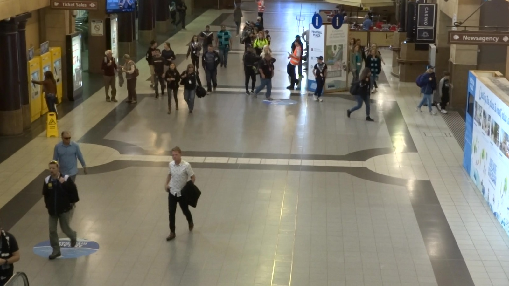
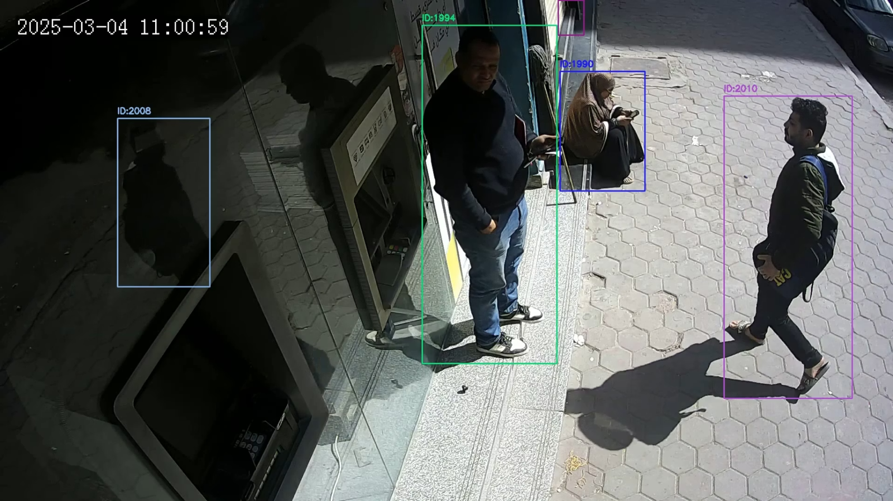
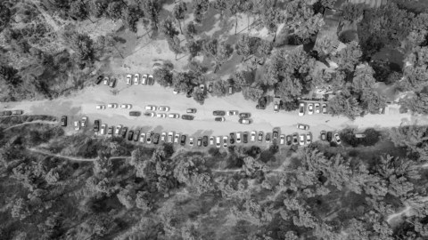
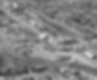
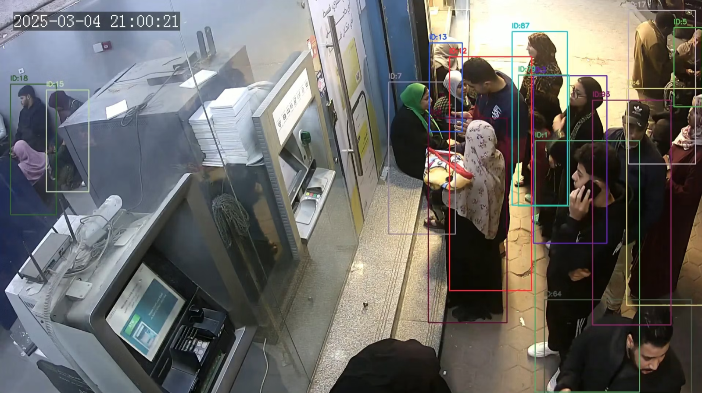

AC-MOT
Computer Engineering and Artificial Intelligence Department


Where Multi-Object Tracking Is Used
 Traffic
Traffic
Public spacesPedestrian safetyCount cars and measure traffic flow.
Follow crowds in stations and malls.
Watch people near roads and crossings.
Our focus: drone video — tiny objects and a small onboard computer.
Detection Finds Objects; Tracking Keeps Their IDs
Detection answers what is in one frame. Tracking links those detections across frames so each object keeps the same ID.

Input: one frame
Output: boxes, class labels, and confidence scores

Input: detections over time
Output: one stable ID for each object
Step 1: First, See the Cues in Real Pictures

Calm sky: edge density 0.021


Busy parking lot: edge density 0.295

Daymean gray 110.6 → night flag 0
 Night
Nightmean gray 40.5 → night flag 1
 Sharp
SharpLaplacian variance 4,074 → blur flag 0

BlurredLaplacian variance 4 → blur flag 1
The VisDrone2019-MOT Benchmark
| Whole benchmark | 288 video clips · 262K frames (all VisDrone2019 tasks) |
| Resolution | 1920 × 1080 (Full HD) |
| Altitude | 5 to 120 m above the ground |
| Camera angle | straight down to tilted |
| Object size | 5 to 30 pixels wide — extremely small |
| Conditions | daylight, low light, motion blur |
| Class balance | Natural benchmark distribution · not designed with equal class counts |
| Motion source | Both camera motion and object motion · observed motion can combine both |
| Tuning split | validation · 7 sequences |
| Final test split | test-dev · 17 sequences · 6,635 frames |
| Used in this work | 7 + 17 = 24 sequences of the tracking (MOT) part |
| Density | 32.4 objects per frame (215,014 filtered boxes) |


Seven Things That Make Tracking Hard
Each problem makes the detector miss objects, or makes the tracker mix up their IDs.
Occlusion
Another object blocks it, so the detector sees only part or none of it.
Small objects
The object covers few pixels, so its shape and details are hard to detect.

Crowds
Nearby objects overlap, so the tracker may merge them or swap their IDs.

Camera motion
The whole scene moves between frames, so object motion is harder to estimate.
Low light
Low light hides details and lowers contrast, so the detector may miss objects.
Motion blur
Fast movement smears the edges, so the box and object identity become less clear.
Look-alike objects
Similar objects look alike, so the tracker can confuse one ID with another.
Occlusion: The Object Is Hidden
Something hides the object for a short time — for example a car, a tree or another person.
Before · the person is ID 1 After · the same person is ID 8
After · the same person is ID 8Why it is a problem
- the detector cannot see it, so there is no box
- the tracker must guess where it is
- when it comes back, it may get a new ID
Example
A person walks behind the white car. Before: ID 1. After: the same person gets ID 8. This is one ID switch.
Small Objects: Too Few Pixels
The object is far from the camera, so it looks very small in the picture.
Cars seen from high upWhy it is a problem
- few pixels means few details, so the detector is not sure or misses it
- a tiny move of the box changes the match a lot
- this happens a lot in drone videos
Example
The COCO dataset calls an object small if it is less than 32 × 32 pixels. Many cars here are about that size.
Crowds: Many Objects Close Together
Many objects are very close to each other.
Why it is a problem
- boxes cover each other, so a correct box can be deleted
- people hide each other again and again
- the tracker can swap the IDs of two people
Example
Here many boxes cover each other. When two people walk past each other, their IDs can swap.
Camera Motion: The Camera Moves
The camera moves (for example on a drone), so everything in the picture moves — even things that stand still.
The camera is on a flying droneWhy it is a problem
- the tracker guesses the next place from the old movement
- camera movement makes this guess wrong
- the object is lost and gets a new ID
Example
A car is parked. The drone turns right, so in the picture the car moves left.
Low Light: The Picture Is Dark
At night or in shadow, the picture is dark, so things are hard to see.
A night pictureGray version · very darkWhy it is a problem
- objects mix with the dark background, so they are missed
- noise in the picture can make wrong boxes
- colours are lost, so people look more alike
Example
In the night picture, people in dark clothes are hard to see on the dark ground.
Motion Blur: The Picture Is Not Sharp
When the object or the camera moves fast, the picture becomes blurry, like a shaky photo.
SharpWhy it is a problem
- the detector cannot see the shape well, so it is not sure or misses the object
- boxes are placed less exactly
- it often comes together with fast movement
Example
Both pictures are the same. We made the lower one blurry on purpose. The small details are gone.
Look-Alike Objects: They Look the Same
Some objects look almost the same — same colour and same shape.
Why it is a problem
- the tracker cannot tell them apart by how they look
- when they come close, their IDs can swap
- from high up, small objects look even more alike
Example
This road has many white cars. When two white cars pass each other, their IDs can swap.
SCI Sets a Continuous Confidence Threshold
The controller first calculates a smooth value from SCI: every SCI value gives its own confidence threshold.
stricter confidence
lower confidence → less conservative detector
SCI Sets the NMS IoU Threshold
NMS (Non-Maximum Suppression) keeps the best box and deletes other boxes that overlap it more than the NMS IoU threshold.
Threshold 0.45 (SCI 0.80)
0.46 > 0.45 → box B is deleted
lower threshold = more aggressive suppression
Threshold 0.49 (SCI 0.00)
0.46 < 0.49 → both boxes stay
higher threshold = more overlapping boxes remain
SCI Chooses the Input Resolution
The input size steps up when SCI crosses 0.35 and 0.60. manually designed · original controller
SCI ≤ 0.35 → 640 · 0.35 < SCI ≤ 0.60 → 736 · SCI > 0.60 → 832
Lower resolution (640)
- less computation
- higher potential FPS
Higher resolution (832)
- more image detail
- better chance to keep small objects
- higher computational cost
The Small Fixes Come After the Main Equations
Crowded, tiny or dark
Difficult objects often get weaker detector scores. A slightly lower line keeps useful detections.
final confidence before clipping
Blurred
A lower NMS IoU makes overlap suppression slightly more aggressive.
More than half of the boxes are tiny
This overrides the normal size rule, because small objects need more spatial detail.
SCI = 0.45 → normal rule 736
tiny share = 0.60 > 0.50 → 832
“The Limits Are Applied Again” = Clamping
After the small fixes, every value is clamped back into its allowed range. manually designed · original controller
NMS IoU · allowed 0.40 ≤ NMS ≤ 0.52
Same idea. With SCI between 0 and 1 and the blur fix, NMS stays between 0.428 and 0.490 — already inside the limits. Here the clamp is a safety guard.
One Frame Through the Whole Controller
inside 0.19 … 0.28 → 0.208
inside 0.40 … 0.52 → 0.453
→ 832
The crowded correction is applied once (crowded, tiny or dark share one −0.012 fix).
Crowd: How Many Objects Are There?
| Boxes | Calculation | Crowd |
|---|---|---|
| 3 | 3 ÷ 30 | 0.10 |
| 15 | 15 ÷ 30 | 0.50 |
| 30 | 30 ÷ 30 | 1.00 |
| 45 | 45 ÷ 30 = 1.5 → min(1.5, 1) | still 1.00 |
Why min(…, 1)?
- keeps the cue between 0 and 1, like the other cues
- 30 or more objects already counts as fully crowded
- stops one very crowded frame from making SCI grow without limit
Tiny: What Share of the Boxes Is Small?
6 normal boxes and 4 tiny boxes (orange)
Why it matters
Tiny objects get weak scores and are easy to lose, so a high Tiny value warns that the scene is hard.
Edge: How Busy Is the Background?
| Edge density | Calculation | Edge |
|---|---|---|
| 0.035 | 0.035 ÷ 0.14 | 0.25 |
| 0.07 | 0.07 ÷ 0.14 | 0.50 |
| 0.14 | 0.14 ÷ 0.14 | 1.00 |
| 0.21 | 1.5 → min(1.5, 1) | 1.00 |
Meaning
Many edges = roads, roofs, trees and markings. A busy background makes ghost boxes and hides real objects.
Night: Is the Frame Dark?
Blur: Is the Frame Sharp?
Variance of the Laplacian, simply
- Sharp image → many strong changes → high variance
- Blurred image → changes are smoothed out → low variance
From Five Cues to One SCI Value
| Cue | What was measured | Cue value | Initial weight | Contribution |
|---|---|---|---|---|
| Crowd | 15 boxes → 15 ÷ 30 | 0.50 | × 0.30 | 0.15 |
| Tiny | 6 of 15 boxes are tiny | 0.40 | × 0.30 | 0.12 |
| Edge | density 0.07 → 0.07 ÷ 0.14 | 0.50 | × 0.20 | 0.10 |
| Night | mean gray 60 < 80 | 1 | × 0.10 | 0.10 |
| Blur | variance 350 ≥ 180 | 0 | × 0.05 | 0.00 |
Then SCI Is Clipped, Smoothed and Updated Every 10 Frames
1 · Clip to [0, 1]
If the weighted sum leaves 0 … 1, it is cut back into the range.
2 · Smooth · window = 7
SCI = the mean of the last 7 readings, so one odd frame changes little.
0.40, 0.42, 0.45, 0.47, 0.46, 0.48, 0.51
3 · Analyse every 10 frames
The scene changes over seconds, not single frames. The last SCI is reused in between.
Preparing the Frame and Where Each Cue Gets Its Data
25% downscaling is a speed step for scene analysis, not for object detection. The small image is never used to find cars or people.
Two sources for the five cues
These two cues use the previous boxes. The analyzer does not rediscover objects from the small image.
Only these three visual cues use the 25% grayscale frame.
What the visual path measures
- Edge: Canny edge density
- Low-light: mean gray level
- Blur: variance of the Laplacian
Why it is fast
25% width × 25% height gives:
0.25 × 0.25 = 0.0625
Only 6.25% of the original pixels, about 1/16. Fine detail is reduced, but the measurements stay in the same defined domain.
Optuna Proposes a Complete Configuration
Optuna does not…
- calculate SCI itself
- train a neural network — it is not an AI model
- try values on a fixed grid or blindly at random
Optuna does…
- propose one complete parameter set per trial
- read the trial’s validation result
- use earlier results to propose the next set (TPE)
| Each trial contains | Parameters | Selected in V1 Trial 24 |
|---|---|---|
| SCI weights | w_crowd · w_tiny · w_edge · w_night · w_blur | 0.1295 · 0.2217 · 0.4337 · 0.0536 · 0.1615 |
| regime boundaries | threshold_mid · threshold_high | 0.13535 · 0.28729 |
| detector parameters | conf_easy · conf_hard · nms_easy · nms_hard | 0.30 · 0.40 · 0.35 · 0.35 |
One Trial, Step by Step
V1 rules for a valid result
- FPS ≥ 25
- IDS ≤ 271 (original full AC-MOT)
- best = highest MOTA among valid trials
How Later Trials Use Earlier Trials (TPE)
TPE (Tree-structured Parzen Estimator) is a sequential Bayesian method: every finished trial changes where the next trial is likely to look.
The first trials explore the allowed ranges.
TPE separates earlier trials into a better group and the rest.
New values are proposed more often where the better trials were, while still exploring.
The Easy / Medium / Hard Boundaries Were Optimized
threshold_mid and threshold_high were optimization parameters, searched together with the weights — not chosen by hand after looking at SCI values. optimization-selected · V1 Trial 24
| Parameter | Selected value (Trial 24) | Regime rule |
|---|---|---|
| threshold_mid | 0.13534938199219218 | Easy: SCI < 0.13535 |
| threshold_high | 0.28728676236279177 | Medium: 0.13535 ≤ SCI < 0.28729 |
| Hard: SCI ≥ 0.28729 |
Changing the Weights Can Move the Same Frame
Initial hand-designed weights
0.130 < 0.13535 → Easy
V1 Trial 24 weights
0.13535 ≤ 0.230 < 0.28729 → Medium
Illustration: both weight sets are compared against the V1 boundaries only to show the effect.
Detector NMS IoU ≠ Tracker Match Threshold
NMS cleans duplicate boxes inside one frame. The tracker match threshold links boxes across frames to existing tracks.
Detector NMS IoU · frame t only
Removes duplicate detector boxes on the same object. Controlled by AC-MOT (0.40 … 0.52).
Tracker match threshold · frame t−1 → t
Decides whether a new box belongs to an existing track. ByteTrack setting match_thresh = 0.86, tuned once and frozen — not changed by AC-MOT.
One Small Tracking Example
MOTA: Overall Tracking Errors
MOTA (Multiple Object Tracking Accuracy) counts all tracking errors together — misses, false boxes and ID switches — against the number of real objects.
Practical reading
- higher is better; 1.00 = no errors
- one number for everything
- it cannot tell which error happened
IDF1: Identity Consistency
IDF1 (Identity F1 score) checks how much of the time each person keeps the right ID. Each real person is matched to its best predicted ID over the whole video.
A ↔ ID 1 in 3 frames
B ↔ ID 2 in 4 frames
10 predicted boxes − 7
(ID 3 twice, the false box)
10 real appearances − 7
(A as ID 3 twice, B missed)
HOTA, Part 1: Detection Accuracy (DetA)
HOTA (Higher Order Tracking Accuracy) combines detection (DetA) and association (AssA). Localization accuracy (LocA) is reported beside it.
DetA · did we detect the objects?
Same small example: A detected in 5 frames + B in 4 frames = 9 TP, 1 FN (B missed), 1 FP (tree).
Overlap levels α
A detection counts as TP at level α only if its overlap is at least α. HOTA repeats the calculation for α = 0.05, 0.10, … 0.95 (19 levels) and averages.
HOTA, Part 2: Association Accuracy (AssA)
For every true-positive box, ask how well its real ID and its predicted ID stay together over the whole video: A = TPA ÷ (TPA + FNA + FPA). AssA is the average over all TP boxes.
| TP boxes | TPA · same pair | FNA · real ID elsewhere | FPA · predicted ID elsewhere | A per box | boxes |
|---|---|---|---|---|---|
| A with ID 1 | 3 | 2 (A as ID 3) | 0 | 3 ÷ 5 = 0.60 | 3 |
| A with ID 3 | 2 | 3 (A as ID 1) | 0 | 2 ÷ 5 = 0.40 | 2 |
| B with ID 2 | 4 | 1 (B missed) | 0 | 4 ÷ 5 = 0.80 | 4 |
averaged over the 19 α levels (same here by assumption)
IDS: Counting Identity Switches
IDS (identity switches) = how many times a real object suddenly gets a different ID. Lower is better.
Person A → 1 switch
The ID changes once, at frame 4 → IDS = 1.
Person B → 0 switches
B is missed once (that is an FN), but comes back with the same ID → no switch.
V1 vs V2 on the Test Set
V1 wins the quality metrics; V2 wins identity switches and speed. Neither wins everything.
| Metric | V1 | V2 | Better here |
|---|---|---|---|
| MOTA ↑ | … | … | V1 |
| HOTA ↑ | … | … | V1 |
| IDF1 ↑ | … | … | V1 |
| IDS ↓ | … | … | V2 |
| FPS ↑ | … | … | V2 |
The Same Pattern on UAVDT
On a different drone dataset the trade-off repeats: V1 has higher quality, V2 has fewer ID switches and more speed than V1.
| Metric | V1 | V2 | Better here |
|---|---|---|---|
| MOTA ↑ | … | … | V1 |
| HOTA ↑ | … | … | V1 |
| IDF1 ↑ | … | … | V1 |
| IDS ↓ | … | … | V2 |
| FPS ↑ | … | … | V2 |
Two Operating Points, Not a Winner and a Loser
V1 · quality-oriented
- highest MOTA, HOTA, IDF1
- more ID switches than V2
- pick it when finding and tracking as much as possible matters most
V2 · identity / efficiency
- fewest ID switches, fastest
- lower quality metrics than V1
- pick it when stable IDs and speed matter most
IoU From Box Corners, Step by Step
| 1 · area of the real box | 200 × 150 = 30,000 |
| 2 · area of the detector box | 200 × 150 = 30,000 |
| 3 · overlap width | min(300,380) − max(100,180) = 120 |
| 4 · overlap height | min(250,280) − max(100,130) = 120 |
| 5 · overlap area | 120 × 120 = 14,400 |
| 6 · union | 30,000 + 30,000 − 14,400 = 45,600 |
When Is a Box Correct? Three Uses of IoU
The same overlap number is used in three different places, each with its own threshold.
1 · Evaluation
A detector box counts as a true positive when IoU with a real object is ≥ 0.5. Otherwise the box is a false positive and the object may be a false negative.
2 · Detector NMS
Inside one frame, a box that overlaps a higher-score box more than the NMS IoU threshold is deleted as a duplicate.
3 · Tracker association
Between frames, ByteTrack compares predicted track boxes with new boxes using an IoU-based distance (1 − IoU) and its match threshold.
NMS Step by Step
| Box | Score | Overlap with … |
|---|---|---|
| A | 0.92 | B: 0.70 · C: 0.10 · D: 0.05 |
| B | 0.85 | A: 0.70 |
| C | 0.60 | D: 0.62 |
| D | 0.55 | C: 0.62 |
1. Take the best box A (0.92) → keep it.
2. Delete boxes that overlap A above 0.45 → B is deleted (0.70). C and D stay.
3. Take the best remaining box C (0.60) → keep it.
4. Delete boxes that overlap C above 0.45 → D is deleted (0.62).
Building the Precision–Recall Table
Sort all detections of one class by score. Go down the list and, after each box, recompute precision and recall. illustration · made-up numbers
| Rank | Score | Result | TP so far | FP so far | Precision | Recall |
|---|---|---|---|---|---|---|
| 1 | 0.95 | TP | 1 | 0 | 1 ÷ 1 = 1.00 | 1 ÷ 5 = 0.20 |
| 2 | 0.90 | TP | 2 | 0 | 2 ÷ 2 = 1.00 | 2 ÷ 5 = 0.40 |
| 3 | 0.80 | FP | 2 | 1 | 2 ÷ 3 = 0.67 | 0.40 |
| 4 | 0.70 | TP | 3 | 1 | 3 ÷ 4 = 0.75 | 3 ÷ 5 = 0.60 |
| 5 | 0.60 | FP | 3 | 2 | 3 ÷ 5 = 0.60 | 0.60 |
| 6 | 0.50 | TP | 4 | 2 | 4 ÷ 6 = 0.67 | 4 ÷ 5 = 0.80 |
Setup
5 real objects. 6 detections. A detection is TP when IoU ≥ 0.5 with an unmatched real object.
AP = Area Under the Precision–Recall Curve
Interpolation
At each recall level, use the best precision reached at that recall or higher. This removes the zig-zag.
| Recall range | Precision | Area |
|---|---|---|
| 0 → 0.4 | 1.00 | 0.4 × 1.00 = 0.400 |
| 0.4 → 0.6 | 0.75 | 0.2 × 0.75 = 0.150 |
| 0.6 → 0.8 | 0.67 | 0.2 × 0.667 = 0.133 |
| 0.8 → 1.0 | 0 | never reached = 0 |
From AP to mAP — and the COCO Version
mAP · mean over classes
Example: AP 0.90 (car), 0.80 (person) → mAP = 0.85.
COCO mAP (mAP 50–95) standard definition
- AP is computed at 10 IoU thresholds: 0.50, 0.55, … 0.95
- each AP uses 101 recall points
- the final number averages over IoU thresholds and classes
So a high COCO mAP needs boxes that are both found and tightly placed.
FPS and the Real-Time Budget
| FPS | Time per frame | Meaning for live video |
|---|---|---|
| 50 | 20 ms | plenty of spare time |
| 30 | 33 ms | keeps up with a 30 FPS camera |
| 25 | 40 ms | our real-time rule (hard limit in the search) |
| 20 | 50 ms | slower than the video — frames pile up |
Where the Time Goes in AC-MOT
Why AC-MOT can be slower
Hard scenes can use a bigger input, which gives the detector more pixels to process.
Why it can be faster
Settings that keep fewer boxes give the detector’s cleanup and the tracker less work.
FPS therefore depends on how many frames fall into each regime in a video.
How to Read the Detector Benchmark
| Column | What it means | Example · YOLOv8n |
|---|---|---|
| mAP | COCO mAP 50–95 on COCO val2017 — accuracy of the boxes | 37.3 |
| Speed | milliseconds for one image | 3.2 ms |
| FPS | 1000 ÷ milliseconds — detector alone | 1000 ÷ 3.2 ≈ 312 |
| Size | number of learned parameters (millions) | 3.2 M |
Same test conditions
- T4 GPU
- TensorRT with FP16 (16-bit numbers, faster)
- 640 × 640 input, batch size 1
Why it matters here
Only rows measured under the same conditions can be compared. The detector-only FPS is much higher than the full tracking system, which also runs the tracker and scene analysis.
Step 1: Predict Where Each Track Moved
Each track remembers its box and its velocity. Before looking at the new frame, a Kalman filter predicts where the box should be now.
What is predicted
Box centre, aspect ratio and height, plus how fast each one changes (a constant-velocity model).
Why it helps
Comparing the new detection with the predicted box, not the old one, gives a much better overlap when objects move.
Step 2: Two Rounds of Matching
Round 1 · high-score detections
Detections with score ≥ track_high_thresh are matched to all tracks first.
A pair is accepted only if its distance is inside the match threshold.
Result: most tracks get their box. Some tracks stay unmatched.
Round 2 · low-score detections
Detections with score between track_low_thresh and track_high_thresh are matched to the tracks still unmatched.
These weak boxes are often half-hidden or blurred objects — this round keeps their IDs alive.
Weak boxes that match no track are thrown away (they never start new tracks).
Step 3: Starting, Keeping and Ending Tracks
New
An unmatched high-score detection with score ≥ new_track_thresh starts a new track with a new ID.
Tracked
Matched in a frame → the box and velocity are updated and the ID continues.
Lost
Not matched → kept in memory and still predicted, so it can be re-found with the same ID.
Removed
Lost for longer than about track_buffer frames (scaled to the video frame rate) → deleted.
Every ByteTrack Setting We Use
| Setting | What it controls | Default | Tuned (AC-MOT) |
|---|---|---|---|
| track_high_thresh | minimum score for round 1 (high-score detections) | 0.25 | 0.18 |
| track_low_thresh | lowest score still used in round 2 | 0.10 | 0.04 |
| new_track_thresh | minimum score to start a new track | 0.25 | 0.20 |
| track_buffer | how long a lost track is kept (frames) | 30 | 45 |
| match_thresh | how far apart a track and a box may be and still match | 0.80 | 0.86 |
Direction of the tuning
- lower score limits → weaker boxes still help tracks
- longer buffer → hidden objects keep their ID longer
- larger match threshold → matches with less overlap are accepted
Status
Tuned once, then frozen. AC-MOT never changes these per frame — it only changes the detector settings.
Step 1: Which Real Objects Are Counted
| Rule | Kept | Removed · example |
|---|---|---|
| class | pedestrian, car, van, truck, bus (IDs 1, 4, 5, 6, 9) | a bicycle at 100 m |
| occlusion | 0 (visible) or 1 (slightly hidden) | 2–3: a person behind a bus |
| truncation | 0 or 1 (a small part outside the image) | 2–3: a car mostly outside the frame |
| annotation score | 1 | 0 = an “ignore” region |
Class-agnostic
All kept classes are merged into one class: a van detected as “car” still counts as found.
Same for every system
The filter is applied once to the ground truth and used by every system, so comparisons stay fair.
Step 2: Matching Boxes in Every Frame
Step 3: Reset, Run, Add Up
1 · Reset per video
The tracker starts with no tracks and ID 1. Without a reset, tracks from one video could match objects in the next.
2 · Run and time
The system processes every frame. FPS = frames processed ÷ processing time, on the same GPU for every system.
3 · One total
TrackEval (pinned to one exact version) combines all sequences into one MOTA, IDF1, HOTA and IDS per system.
What Each Ablation Stage Switches On
| Stage | What is switched on | What it can change |
|---|---|---|
| OLD-A0 | baseline: default settings | reference point |
| OLD-A1 | tuned ByteTrack settings | association: how tracks and boxes are linked |
| OLD-A2 | adaptive confidence + NMS (from SCI) | which boxes reach the tracker |
| OLD-A2R | adaptive resolution only | how much image detail the detector sees |
| OLD-A3 | full AC-MOT | all adaptive parts together |
Reading the Ablation Metric by Metric
| Metric | Best stage | Value | Baseline (A0) |
|---|---|---|---|
| MOTA ↑ | OLD-A2R · adaptive resolution only | 18.425 | 17.633 |
| HOTA ↑ | OLD-A3 · full AC-MOT | 33.064 | 29.837 |
| IDF1 ↑ | OLD-A3 · full AC-MOT | 36.296 | 30.892 |
| IDS ↓ | OLD-A2 · adaptive confidence + NMS | 210 | 283 |
| FPS ↑ | OLD-A1 · tuned ByteTrack | 44.51 | 44.09 |
Why No Stage Wins Everything
Resolution helps detection…
Measured: A2R has the highest MOTA (18.425), but more IDS (241) than A2 (210) and lower FPS (39.56).
Likely reason: more pixels help find small objects, but more small objects close together give more chances to mix up IDs, and bigger inputs cost time.
The full system helps identity quality…
Measured: A3 has the highest HOTA (33.064) and IDF1 (36.296), with IDS 271 and FPS 42.085. A2R has the lowest FPS (39.56).
Likely reason: combining all adaptive parts keeps identities consistent for longer, while the extra processing still has a speed cost.
Searching for Two Goals at Once
What changes from V1
- V1: one score (MOTA) + rules (FPS ≥ 25, IDS ≤ 271)
- V2: two scores kept separate — no single “best” number
- same search space, same TPE sampler and seed, validation videos only
What one trial gives
Each trial runs the full validation pipeline and returns a pair: (MOTA, IDS). Trials that break the FPS limit are not acceptable.
50 trials were planned; 49 completed.
Dominance and the Pareto Front
Dominance
Trial X dominates trial Y if X is at least as good on both goals and better on at least one.
| Toy trial | MOTA | IDS | On the front? |
|---|---|---|---|
| A | 22 | 300 | yes — best MOTA |
| B | 20 | 200 | yes — better IDS than A |
| C | 19 | 250 | no — B is better on both |
Why Trial 22 Was Selected
A front has many good trials, so a selection rule fixed in advance picks one: give equal weight to both goals. That rule selected Trial 22.
| Front point (validation) | MOTA | IDS | Character |
|---|---|---|---|
| Trial 16 | … | … | highest MOTA, many IDS |
| Trial 22 · selected | … | … | balanced |
| Trial 8 | … | … | fewest IDS, low MOTA |
Then frozen and tested
Trial 22 was frozen and run on the test set: MOTA …, IDS …, FPS ….
Read it correctly
V2 is a different operating point, not a replacement for V1 — see the V1 vs V2 explanation.